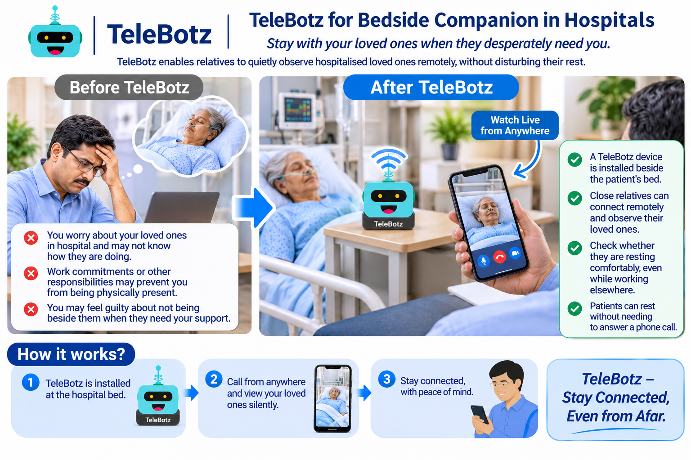

Worry about what is happening
When a loved one is hospitalised, relatives may feel anxious if they cannot see how the person is resting or how they are doing between visits.
Stay with your loved ones when they desperately need you.
TeleBotz enables close relatives to quietly observe hospitalised loved ones remotely, without disturbing their rest by ringing the patient's phone or requiring them to answer a call.

A hospital stay can be worrying for the whole family. Work, travel, and other responsibilities may keep close relatives away, even when they wish they could be beside the patient.
When a loved one is hospitalised, relatives may feel anxious if they cannot see how the person is resting or how they are doing between visits.
Work commitments or other unavoidable duties can prevent you from staying physically present at the hospital throughout the day.
Repeatedly ringing the patient's phone or asking them to answer a call may interrupt sleep and rest, especially during recovery.
Relatives may feel helpless or guilty when they cannot be beside someone who needs their care and emotional support.
A TeleBotz device is placed beside the hospital bed. An authorised close relative can connect remotely using a smartphone and quietly view the patient, without requiring the patient to pick up a phone or respond to an incoming call.
The TeleBotz device remains with the patient in the hospital, positioned and configured in coordination with the hospital team.
Authorised family members can connect through the TeleBotz User App from their workplace, home, or another location.
The intended experience is quiet visual observation: the patient does not need to answer a phone call for a relative to check in.
Stay connected to your loved one during the day, including times when work or distance prevents an in-person visit.
A TeleBotz device is set up beside the patient's bed in the hospital, subject to hospital approval and the patient's consent.
An authorised relative uses the TeleBotz User App to connect from a separate location and quietly view the patient.
Relatives can check in without requiring the patient to answer a phone call, helping them feel closer while away.
TeleBotz is intended as a supplementary family-connection service, not a replacement for clinical observation, nursing care, hospital monitoring equipment, or emergency communication. Any deployment must follow hospital policies, patient or authorised-representative consent, privacy requirements, and agreed access controls. Camera placement and operation should respect the privacy of other patients and staff.
Let's explore whether a privacy-conscious TeleBotz bedside companion setup could support family connection in your hospital.
Discuss this use case